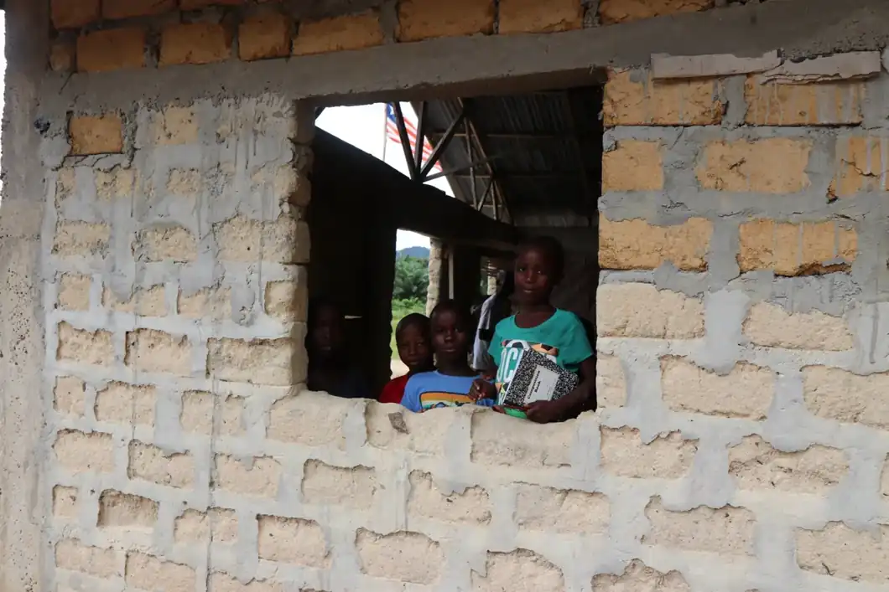
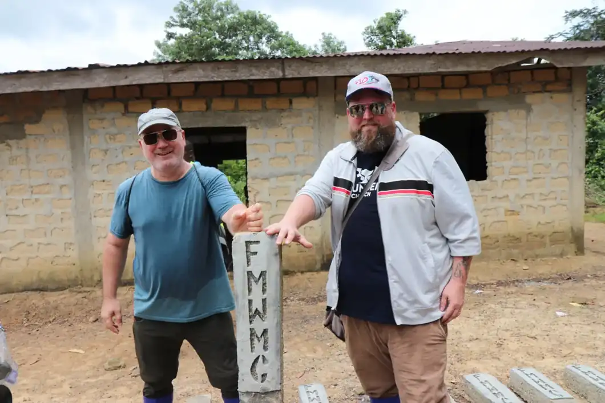
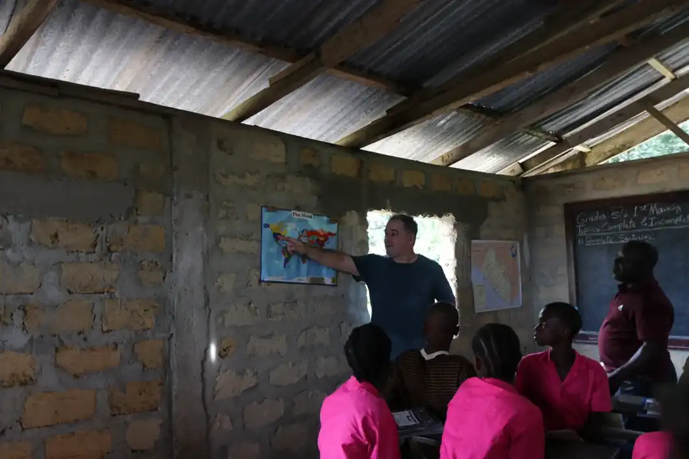
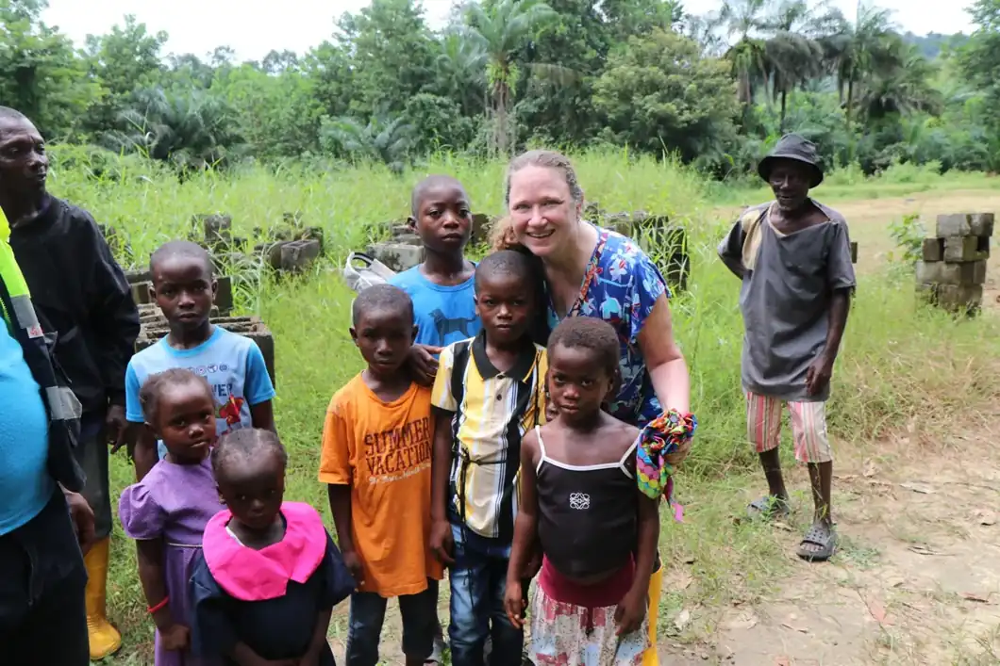
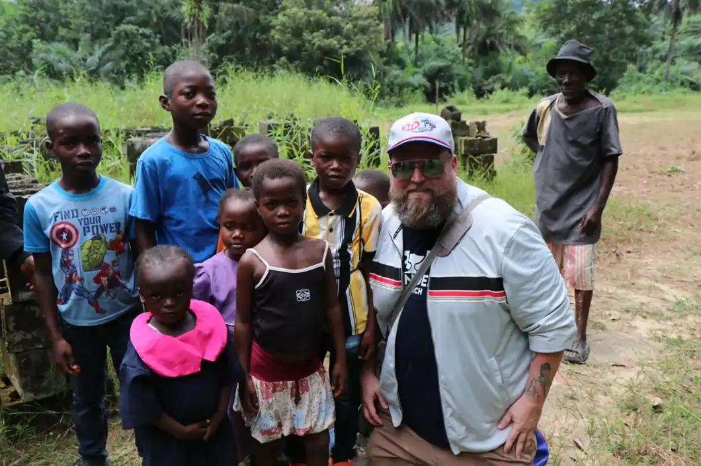
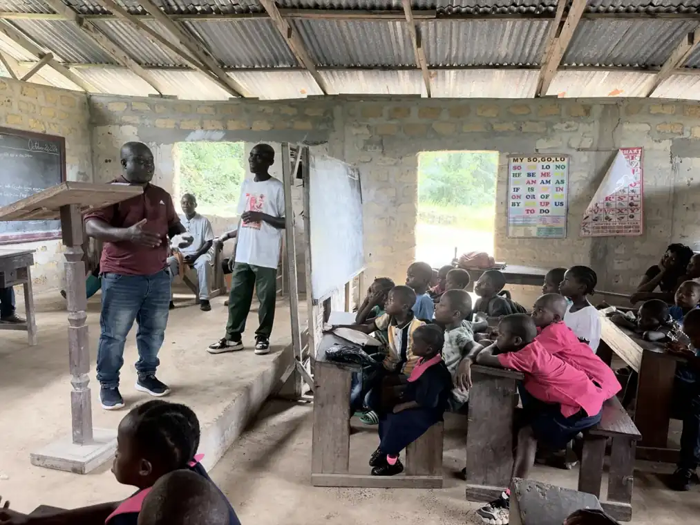
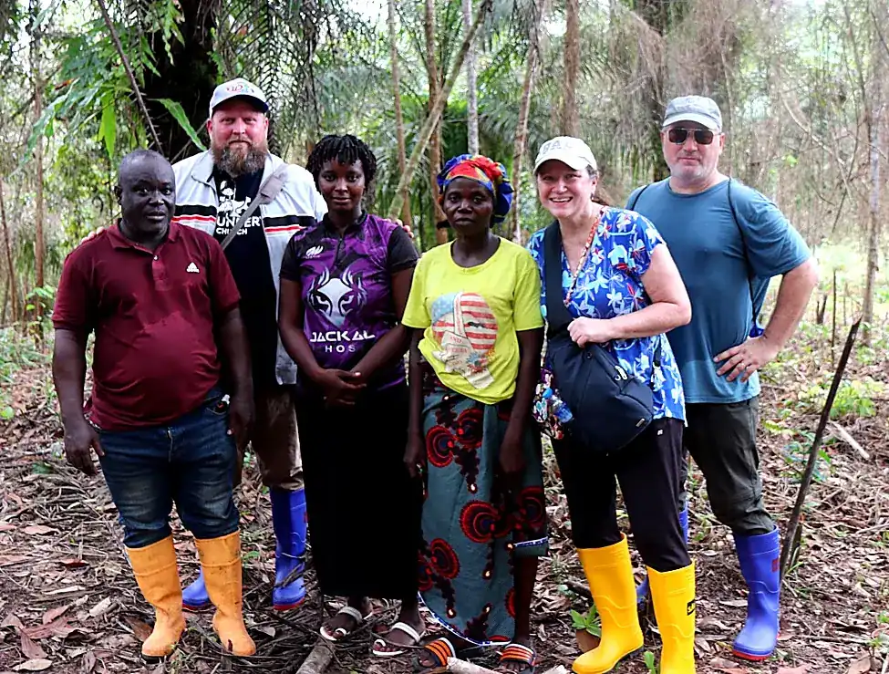

SUSTAINABILITY
Grow with purpose
Exploring cacao cultivation and thoughtful land use as foundations for long-term, locally led opportunity.
A NEW CHAPTER IN LIBERIA
A vision taking root in Liberia, where faith, local leadership, and sustainable opportunity come together to help communities thrive.
Rooted in a wider community of service.
A PLACE TO BEGIN
Cultivate Hope is an emerging agricultural and community development vision in Liberia, connected with Free Methodist World Missions.
At its heart is a simple idea: lasting opportunity grows from local relationships, practical resources, and a commitment to the people already doing the work.
As the pilot project takes shape with local partners, this space will share the vision, progress, and voices behind it.
Explore the opportunityON THE GROUND IN LIBERIA
A CONNECTED VISION
These are the opportunities guiding the conversation as the pilot project develops. Specific programs, funding and timelines have not yet been finalized.
Exploring cacao cultivation and thoughtful land use as foundations for long-term, locally led opportunity.
Recognizing the importance of education and the possibilities that grow when communities have sustainable support.
Listening to local leaders and families, strengthening relationships and shaping the next steps together.
Our guiding vision for Cultivate Hope
REAL PLACES. REAL PEOPLE.
Photographs from recent visits in Liberia. The people, schools and landscapes seen here help tell the wider story that informs this initiative.







THIS IS ONLY THE BEGINNING
The Cultivate Hope pilot project is in its early stages. More information on site plans, local partners, milestones and opportunities to participate will be shared as details are confirmed.
STAY CLOSE TO THE STORY
We’re creating a place to share verified updates, milestones and opportunities to support Cultivate Hope as the vision develops.
Learn about FMWMA project-specific giving link will be added when an official channel is confirmed.